항공기관정비기능사 (2003-10-05 기출문제)
1과목: 비행원리
1. 비행기의 동체 길이가16m, 직사각형 날개 길이가20m, 시위길이가 2m일 때, 이 비행기 날개의 가로세로비는?
- 10
- 8
- 4
- 5/4
(정답률: 77%)

2. 비압축성 흐름에서의 형상항력, 압력항력 및 마찰항력의 관계를 맞게 표시한 것은?
- 형상항력 = 압력항력 + 마찰항력
- 형상항력 = 압력항력 - 마찰항력
- 형상항력 = 마찰항력 - 압력항력
- 형상항력 = (압력항력 + 마찰항력)/2
(정답률: 91%)
3. 제1차 세계대전 당시 항공기술의 발달사항이 아닌 것은?
- 항공기 성능이 전반적으로 향상
- 용도에 따라 비행기를 분류
- 비행선의 가치가 없어짐
- 항공기 생산기술이 소형화.소량생산됨
(정답률: 53%)
4. 최근 제트여객기에서는 충격파의 발생으로 인한 항력의 증가를 억제하기 위해서 시위의 앞부분에 압력분포를 뾰족하게 하였다. 이 날개 형태를 무엇이라 하는가?
- 층류 날개골
- 난류 날개골
- 피키 날개골
- 초임계 날개골
(정답률: 41%)
5. 4자 계열 날개골 중에서 받음각 α = 0일 때, 양력이 0인 날개골은?
- 0015
- 2430
- 4415
- 4430
(정답률: 79%)
6. 비행기의 동적 가로안정의 특성과 관계가 없는 것은?
- 방향 불안정
- 세로 불안정
- 나선 불안정
- 더치롤
(정답률: 72%)
7. 매스 밸런스(Mass Balance)를 부착하는 가장 큰 이유는?
- 구조의 강도를 보강하기 위해
- 조종면의 플러터(Flutter)를 방지하기 위해
- 조종면이 서로 반대 방향으로 움직이도록 하기 위해
- 상승속도를 증가시키기 위해
(정답률: 60%)
8. 헬리콥터에서 정지비행시 회전날개의 회전축으로부터 r의 위치에 있는 깃 단면의 회전선속도 Vr를 산출하는 표현식은? (단, Ω 은 회전날개의 각속도, r 는 회전축으로부터 깃단면 까지의 거리)
- Vr = Ω · r2
- Vr = Ω · r
- Vr = r2/Ω
- Vr = Ω/r2
(정답률: 48%)
9. 비행기에 발생하는 항력중 충격파가 생기는 초음속흐름에서 발생하는 것은?
- 압력항력
- 마찰항력
- 유도항력
- 조파항력
(정답률: 87%)
10. 비행기의 안정성에 대하여 가장 올바르게 설명한 것은?
- 조종사의 조작에 따라 비행기가 쉽게 움직이는 것을 말한다.
- 돌풍과 같은 외부의 영향에 대해 곧바로 반응하는 것을 말한다.
- 전투기와 같이 기동이 좋다는 것을 말한다.
- 비행기가 일정한 비행상태를 유지하는 것을 말한다.
(정답률: 70%)
11. 조종석의 조종 장치와 직접 연결되어 태브만 작동 시켜 조종면을 움직이도록 설계된 탭은?
- 트림 탭
- 평형 탭
- 서보 탭
- 스프링 탭
(정답률: 34%)
12. 유체의 흐름과 관련하여 동압(dynamic pressure)은?
- 속도에 비례하고, 밀도에는 반비례한다.
- 속도의 제곱에 비례하고, 밀도에는 비례한다.
- 속도와 밀도에 비례한다.
- 속도에 비례하고, 밀도의 제곱에 비례한다.
(정답률: 63%)
13. 유도항력계수에 대한 설명 내용으로 가장 올바른 것은?
- 양력계수에 비례한다.
- 양력계수의 제곱에 비례한다.
- 날개의 가로세로비에 비례한다.
- 날개의 하중에 비례한다.
(정답률: 44%)
14. 비행기 성능에 관한 설명 내용으로 옳지 않은 것은?
- 유해항력이 커지지 않도록 설계한다.
- 비행기의 표면을 매끈하게 처리한다.
- 공기저항이 작도록 유선형으로 만든다.
- 비행기의 순항시간은 고려치 않아도 된다.
(정답률: 90%)
15. 1500Kgf 의 추력으로 속도 360Km/h로 나는 비행기가 있다 이 비행기의 이용마력은 얼마인가?
- 2000마력
- 1500마력
- 1200마력
- 1000마력
(정답률: 29%)
16. 감항성에 대한 설명중 가장 올바른 것은?
- 항공기가 안전한 운항을 할 수 있는지의 여부를 말한다.
- 항공기가 불안전한 운항을 하는지 감시하는 것을 말한다.
- 항공기가 품질을 유지향상 하는지 여부를 말한다.
- 항공기가 비행요건에 만족한지 여부를 말한다.
(정답률: 86%)
17. 제작회사나 관련기관으로 부터 전달되는 기술지시에서 AD는 무엇을 나타내는가?
- 시한성 기술지시
- 감항성 개선명령
- 도해부품 목록
- 최소 구비장비 목록
(정답률: 33%)
18. 쇠톱(hack saw) 사용법에 대한 설명중 가장 올바른 것은?
- 당길때 절삭되도록 한다.
- 톱날의 장력은 토큐 렌치로 정확히 주어야 한다.
- 가공물에 잇날이 최소한 4개이상 접해야 한다.
- 작업이 끝난후 톱날의 장력을 느슨하게 한 후 보관한다.
(정답률: 41%)
19. 안전계수를 1.15로 계산할 때 리벳결합에 필요한 리벳의 수를 구하는 공식은? (단, D: 리벳의 직경, L: 접합부의 폭 Q: 리벳의 최대 전단응력, N: 리벳수 UT: 판의 최대 인장응력, T: 판의 두께 )
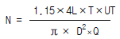
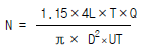
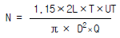
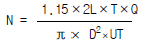
(정답률: 38%)
20. 항공용 볼트의 식별부호중 알루미늄 합금 볼트의 머리 표시는?
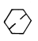
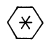
(정답률: 70%)
2과목: 항공기정비
21. 연한재질의 알루미늄 튜브(1100,3003 또는 5⑤2)에서 손작업으로 굽힐 수 있는 가능한 치수는?
- 1/4 inch이하
- 5/16 inch이하
- 7/16 inch이하
- 5/8 inch이하
(정답률: 29%)
22. 항공기 표피(Skin)와 같이 얇은 판재의 균열을 검사할 때 표면결함에 대한 검출감도가 가장 좋은 검사는?
- 자분탐상 검사
- 형광침투 검사
- 염색침투 검사
- 와전류 탐상 검사
(정답률: 35%)
23. 엔진 압축기 내부등과 같이 직접 눈으로 볼 수 없은 곳을 검사하는 방법은?
- 방사선 검사
- 보어스코프 검사
- 초음파 검사
- 와전류 검사
(정답률: 66%)
24. 항공기가 주기되어 있는 동안 얼음이 얼어 붙었으면 무엇으로 깨어내야 하는가?
- 스틸망치
- 부드러운 솔
- 고무호스
- 무거운 공구
(정답률: 36%)
25. 헬리콥터의 지상 정비지원은 어디에 속하는가?
- 운항정비
- 시한성정비
- 공장정비
- 벤치체크
(정답률: 56%)
26. 항공기의 세척을 알카리 세제로 할 경우의 특징이 아닌것은?
- 인화성이 없다.
- 독성이 없다.
- 추운날씨에 적합하다.
- 페인트를 칠한 표면이 변색되지 않는다.
(정답률: 65%)
27. 다음 ( )안에 알맞는 말은?
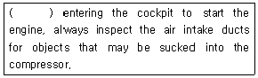
- After
- Before
- ON
- During
(정답률: 63%)
28. 밑줄친 부분을 의미하는 올바른 단어는?
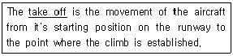
- 이륙
- 착륙
- 순항
- 급강하
(정답률: 83%)
29. 최소 측정값이 1/1000 mm인 마이크로 미터의 아래 그림이 지시하는 측정값은?
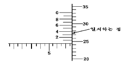
- 7.763 mm
- 7.753 mm
- 7.743 mm
- 7.703 mm
(정답률: 57%)
30. 세척제, 침투제, 현상제가 순차적으로 검사에 이용되는 검사법은?
- 자분탐상 검사
- 육안 검사
- 초음파 검사
- 침투탐상 검사
(정답률: 90%)
31. 볼트와 너트를 고정하고 풀 때 사용되는 공구의 사용법에 대한 설명 내용으로 틀린 것은?
- 볼트나 너트를 조일 때에는 손으로 어느 정도 조인 다음 렌치를 사용한다.
- 각종 렌치를 사용할 때에는 되도록 미는 방향으로 힘을 가하여야 한다.
- 작업 중에는 손을 다치지 않도록 주의한다.
- 익스텐션 바를 사용시는 한손으로 바를 잡고 작업한다.
(정답률: 60%)
32. 항공기가 이륙하여 착륙을 완료하는 횟수를 뜻하는 용어는?
- Block time
- Air time
- Time in service
- Flight cycle
(정답률: 66%)
33. 보통 나무, 종이, 직물 및 각종 폐기물 등과 같이 가연성 물질에서 일어나는 화재는?
- A급 화재
- B급 화재
- C급 화재
- D급 화재
(정답률: 89%)
34. 항공기 정비 중에서 일반적인 보수에 속하지 않는 것은?
- 항공기 지상 취급
- 항공기 점검
- 항공기 조절 및 검사
- 항공기의 부품 교환
(정답률: 45%)
35. 판금 설계 중에서 설계도가 없거나 항공기 부품으로부터 직접 모형을 떠야 할 필요가 있을 때,사용하는 설계방식은?
- 평면 전개
- 모형 뜨기
- 모형 전개도법
- 입체 전개
(정답률: 71%)
36. 온도(Temperature)의 척도로써 섭씨온도와 화씨온도 및 절대온도를 사용한다. 섭씨 850℃는 화씨(℉) 몇 도인가?
- 1562℉
- 450℉
- 1587.6℉
- 490℉
(정답률: 49%)
37. 연료탱크(fuel tank)속에 있는 서지박스(surge box)의 주목적은?
- 연료가 채워질 동안 탱크에 정압이 일어나는 것을 방지 한다.
- 비행중 탱크에 부압(negative pressure)이 걸리는 것을 방지한다.
- 연료부족시 비상연료로 사용하기 위하여
- 항공기의 자세에 관계없이 엔진에 연료의 공급을 확실히 유지하기 위하여
(정답률: 42%)
38. 어떤 왕복기관의 출력을 동력계로 측정하였더니 1⑤㎰였다. 이때 대기압력 750mmHg,건구온도 25℃,습구온도 20℃(이때 수증기 압력 15mmHg)라 하면 표준대기에서의 마력은 얼마인가?
- 110.4㎰
- 115.4㎰
- 120.4㎰
- 125.4㎰
(정답률: 19%)
39. 마그네토(magneto)를 장착할 때는 어느 실린더를 기준으로 하여 장착하는가?
- 제일 전방 실린더를 기준으로 한다.
- 마스터 실린더(master cylinder)
- 1 번 실린더를 기준으로 한다.
- 제일 후방 실린더를 기준으로 한다.
(정답률: 62%)
40. 크랭크축 속도에 대한 캠판속도의 법칙을 옳게 나타낸 것은?
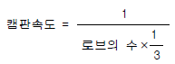
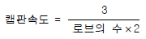
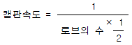
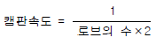
(정답률: 55%)
3과목: 항공기관
41. 항공기 왕복기관의 매니폴드 압력이 증가함에 따라 어떤 현상이 주로 나타나는가?
- 실린더 내의 공기부피가 증가한다.
- 혼합가스의 무게가 감소한다.
- 실린더 내의 공기부피가 감소한다.
- 실린더 내의 공기밀도가 증가한다.
(정답률: 49%)
42. 왕복기관의 윤활계통에서 릴리프 밸브의 역할로 가장 올바른 것은?
- 윤활유가 불필요하게 기관내부로 스며 들어가는 것을 방지한다.
- 기관내부로 들어가는 윤활유의 압력이 높을 때 윤활유를 펌프입구로 되돌려준다.
- 윤활유 여과기가 막혔을 때 윤활유가 여과기를 거치지 않고 직접 기관의 내부로 공급되게 한다.
- 윤활유 온도가 높을 때 윤활유를 냉각기로 보내고 낮을 때는 직접 윤활유 탱크로 가도록 한다.
(정답률: 62%)
43. 가스터빈 기관에서 배기부분의 주 구성품에 해당 되지 않는 것은?
- 테일 파이프
- 배기 콘
- 배기 노즐
- 디퓨우져
(정답률: 54%)
44. 터보제트 기관의 추진효율을 가장 올바르게 표현한 것은?
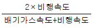
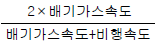
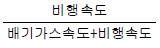
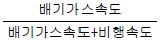
(정답률: 38%)
45. 1차 연료와 2차 연료를 분류시키고 시동시 과열상태(Hot start)를 방지하도록 하는 장치는 무엇인가?
- FCU
- P&D valve
- Fuel nozzle
- Fuel heater
(정답률: 74%)
46. 일반적으로 가스터빈 기관 시동계통의 작동 설명 내용으로 가장 올바른 것은?
- 시동 스위치 접촉과 동시 점화 플러그는 작동되고 연료공급은 조금 늦는다.
- 시동 스위치 접촉과 동시 점화 플러그와 연료공급이 연소실에 동시 공급된다.
- 연료공급이 분무화 상태가 된 후 점화 플러그가 작동되어 쉽게 점화된다.
- 엔진 회전이 자립회전속도에 도달되면 점화동력과 연료가 공급된다.
(정답률: 19%)
47. 왕복기관에서 마그네토 점검을 수행할 때 무엇을 점검하여야 하는가?
- 프로펠러 조속기(Propeller governor)점검
- 연료 혼합비(Fuel mixture ratio)점검
- 회전수 낙차(RPM drop)점검
- 기관 진동(Engine vibration)점검
(정답률: 25%)
48. 피스톤에 작용하는 높은 압력의 힘을 커넥팅 로드에 전달하는 부분은?
- 크랭크 축
- 피스톤 핀
- 캠링
- 로커 암
(정답률: 30%)
49. 가스터빈 기관에서 연소효율에 대한 내용으로 가장 올바른 것은?
- 공급된 열량과 공기의 실제 증가된 에너지(엔탈피)의 비를 말한다.
- 연소효율은 압력 및 온도가 낮을수록 높아진다.
- 연소효율은 공기의 속도가 클수록 높아진다.
- 보통 연소효율은 80% 이상 이어야한다.
(정답률: 55%)
50. 축류식 압축기에서 실속이 일어나는 원인이 아닌 것은?
- 압축기 입구온도가 높을 때
- 기관의 회전속도가 설계점 이하로 낮아질 때
- 압축기 입구의 압력이 높아질 때
- 기관을 가속할 때
(정답률: 16%)
51. 가스터빈 기관에서 윤활계통의 배유펌프 역할로 가장 올바른 것은?
- 섬프(sump)에 모인 윤활유를 탱크로 되돌려 보낸다.
- 탱크내의 윤활유를 기관으로 보낸다.
- 탱크내의 윤활유를 배유시킨다.
- 냉각기의 윤활유를 섬프로 보낸다.
(정답률: 49%)
52. 항공용 가솔린의 구비 조건으로서 가장 관계가 먼 것은?
- 기화성이 좋아야 한다.
- 안전성이 커야 한다.
- 부식성이 커야 된다.
- 내한성이 커야한다.
(정답률: 76%)
53. 고도에 따른 추력 감소율은?
- 터보제트 엔진 보다 터보팬 엔진이 크다.
- 터보제트 엔진 보다 터보팬 엔진이 작다.
- 터보제트 엔진이나 터보팬 엔진이나 같다.
- 고도에 따라 변함없다.
(정답률: 36%)
54. 가스터빈 기관의 안쪽으로 공기가 통과하면서 공기의 압력,온도 및 속도가 변화하는데 압력이 제일 높은 곳은?
- 터빈 출구
- 압축기 출구
- 터빈 입구
- 압축기 입구
(정답률: 50%)
55. 오일 여과기에 있는 바이패스 밸브(By-pass valve)의 주된 기능은 무엇인가?
- 릴리이프 밸브(Relief valve)의 역할을 한다.
- 오일 냉각기 둘레로 오일을 직접 보내준다.
- 오일을 보기부분으로 보낸다.
- 여과기가 막힐 경우 오일이 정상적으로 흐르도록 한다.
(정답률: 75%)
56. 터빈엔진 시동시 결핍시동(Hung start)은 엔진시동 중 어떤 현상을 말하는가?
- 엔진의 배기가스 온도가 규정치를 넘는다.
- 엔진의 압력비가 규정치를 넘는다.
- 엔진의 속도 회전수가 규정치를 넘는다.
- 엔진의 회전수가 완속회전수(Idle RPM)에 도달하지 못한다.
(정답률: 73%)
57. 부피가 일정한 경우 공기 6Kg을 T1=100℃에서 T2=600℃ 까지 가열하는데 필요한 공급 열량은 얼마인가? ( 부피가 일정한 상태에서 기체의 온도를 1℃ 높이는데 필요한 열량은 0.172Kcal/Kg· ℃이다.)
- 316Kcal
- 416Kcal
- 516Kcal
- 616Kcal
(정답률: 56%)
58. 미터제 공학 단위계에서는 힘을 표시할 때, 1Kg의 질량이 중력 가속도를 받을 때 1Kgf로 표시한다. 이것을 힘(force), 질량(mass), 길이(length) 및 시간(time)의 기본 단위로 표시했을 때의 값과 관계 없는 것은?
- 1Kgm× 9.8 m2/s
- 1Kgm× 9.8 m/s2
- 9.8Kgm·m/s2
- 9.8 N
(정답률: 30%)
59. 왕복기관에서 1 시간당 1 마력을 내는데 소비된 연료의 무게를 무엇이라 하는가?
- 왕복 기관의 비열비
- 왕복 기관의 연료 출력율
- 왕복 기관의 연료 비열비
- 왕복 기관의 비연료 소비율
(정답률: 56%)
60. 프로펠러의 효율을 향상시키기 위하여 후퇴각을 준 여러개의 깃으로 이루어져 있는 프로펠러의 명칭은?
- 터보 팬 프로펠러
- 터보 제트 프로펠러
- 프롭 팬
- 펄스 팬
(정답률: 40%)